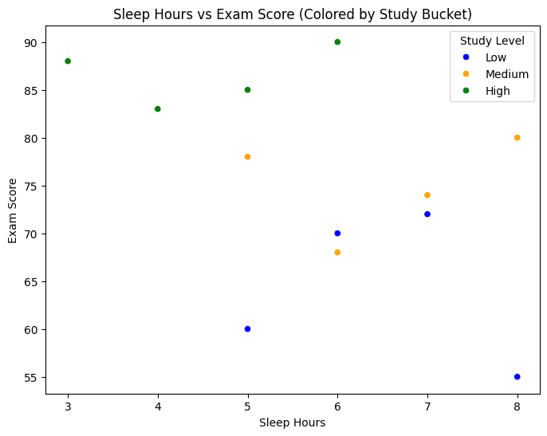

This chart shows the monthly sales trends over the past year. Based on this data, I would prioritize marketing efforts in months where revenue is consistently lower.

This chart shows quarterly customer satisfaction ratings. I would focus on improving customer support in the quarter with the lowest satisfaction scores.